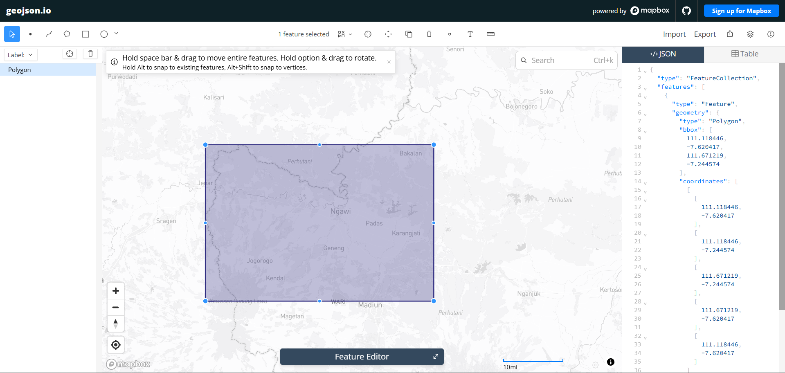
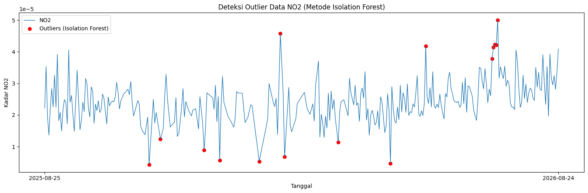
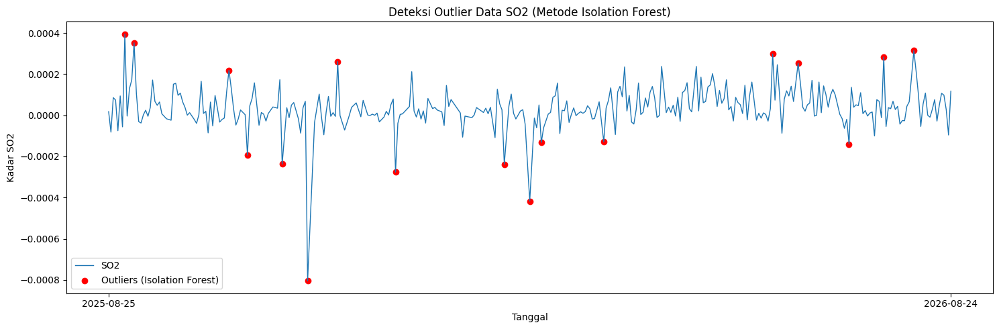
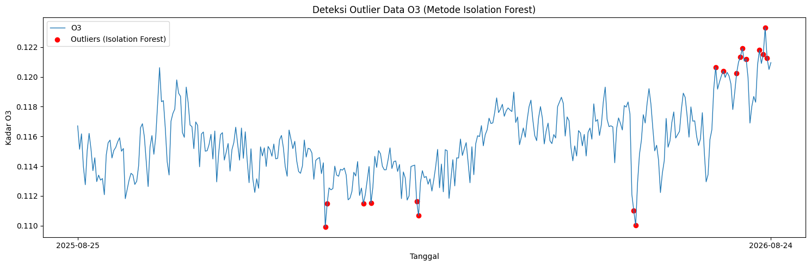
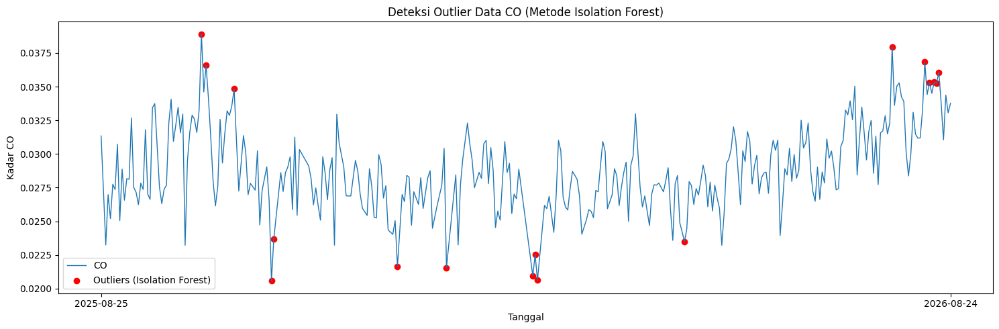

Data Understanding#
Data Collection#
Langkah pertama dalam proyek ini adalah mengumpulkan data polutan udara (seperti NO₂, SO₂, O₃, dan CO) yang bertipe deret waktu (Time Series) untuk wilayah Kabupaten Ngawi. Dataset ini diambil dari platform satelit Copernicus Data Space Ecosystem menggunakan library openeo.
Install Library#
Untuk melakukan proses crawling data, kita membutuhkan pustaka Python pendukung yaitu openeo untuk berkomunikasi dengan API Copernicus.
pip install openeo
Autentikasi dan Pengambilan Data#
Skrip di bawah ini melakukan proses autentikasi untuk menghubungkan sistem lokal kita dengan server Copernicus menggunakan device code flow.
import openeo
connection = openeo.connect("openeo.dataspace.copernicus.eu").authenticate_oidc()
Saat menjalankan baris di atas, akan muncul permintaan autentikasi:
Visit (link authentikasi) 📋 to authenticate.
✅ Authorized successfully
Authenticated using device code flow.
Klik link autentikasi lalu login menggunakan akun Copernicus.
Autentikasi dan Definisi Area#
Setelah berhasil masuk, langkah selanjutnya adalah menentukan wilayah spesifik. Titik koordinat batas wilayah Ngawi (Poligon) didapatkan menggunakan alat bantu pemetaan geojson.io dengan menggambar kotak di atas wilayah yang diinginkan kemudian menyalin koordinatnya.

Koordinat yang didapatkan dimasukkan ke dalam variabel aoi (Area of Interest). Satelit Sentinel-5P kemudian diminta untuk mengambil data polutan berdasarkan bounding box wilayah tersebut dengan menyesuaikan variabel s5post atribut bands.
Karena satelit mungkin merekam area yang sama beberapa kali, dilakukan agregasi temporal harian agar hanya terdapat rata-rata satu data per hari. Dilanjutkan dengan agregasi spasial agar seluruh grid pada wilayah Ngawi dirata-rata menjadi satu nilai tunggal.
ngawi_bbox = {
"west": 111.118446,
"south": -7.620417,
"east": 111.671219,
"north": -7.244574
}
aoi = {
"type": "Polygon",
"coordinates": [
[
[111.118446, -7.620417],
[111.118446, -7.244574],
[111.671219, -7.244574],
[111.671219, -7.620417],
[111.118446, -7.620417],
]
]
}
Pengambilan Data NO₂, SO₂, O₃, dan CO#
Data diambil untuk periode 25 Agustus 2025 hingga 25 Agustus 2026, dengan agregasi harian (temporal) dan agregasi spasial agar seluruh grid wilayah Ngawi dirata-rata menjadi satu nilai per hari.
daftar_polutan = ["NO2", "SO2", "O3", "CO"]
for polutan in daftar_polutan:
s5p = connection.load_collection(
"SENTINEL_5P_L2",
temporal_extent=["2025-08-25", "2026-08-25"],
spatial_extent=ngawi_bbox,
bands=[polutan],
)
s5p_daily = s5p.aggregate_temporal_period(reducer="mean", period="day")
s5p_aoi = s5p_daily.aggregate_spatial(reducer="mean", geometries=aoi)
result = s5p_aoi.save_result(format="CSV")
job = result.create_job(title=f"s5p_{polutan.lower()}_ngawi")
job.start_and_wait()
job.get_results().download_files(f"output_{polutan.lower()}_ngawi")
Hasil CSV#
Berikut cuplikan data mentah hasil pengambilan (sebelum dinormalisasi):
NO₂
| date | feature_index | NO2 | |
|---|---|---|---|
| 0 | 2026-07-21T00:00:00.000Z | 0 | 0.000024 |
| 1 | 2026-07-15T00:00:00.000Z | 0 | 0.000033 |
| 2 | 2026-07-20T00:00:00.000Z | 0 | 0.000030 |
| 3 | 2026-07-17T00:00:00.000Z | 0 | 0.000035 |
| 4 | 2026-07-16T00:00:00.000Z | 0 | 0.000031 |
SO₂
| date | feature_index | SO2 | |
|---|---|---|---|
| 0 | 2025-09-25T00:00:00.000Z | 0 | 0.000107 |
| 1 | 2025-09-27T00:00:00.000Z | 0 | 0.000038 |
| 2 | 2025-09-23T00:00:00.000Z | 0 | 0.000155 |
| 3 | 2025-09-24T00:00:00.000Z | 0 | 0.000097 |
| 4 | 2025-09-21T00:00:00.000Z | 0 | -0.000024 |
O₃
| date | feature_index | O3 | |
|---|---|---|---|
| 0 | 2025-11-20T00:00:00.000Z | 0 | 0.114528 |
| 1 | 2025-11-19T00:00:00.000Z | 0 | 0.116565 |
| 2 | 2025-11-17T00:00:00.000Z | 0 | 0.115491 |
| 3 | 2025-11-22T00:00:00.000Z | 0 | 0.114391 |
| 4 | 2025-11-23T00:00:00.000Z | 0 | 0.112889 |
CO
| date | feature_index | CO | |
|---|---|---|---|
| 0 | 2025-09-20T00:00:00.000Z | 0 | 0.026309 |
| 1 | 2025-09-16T00:00:00.000Z | 0 | 0.033442 |
| 2 | 2025-09-18T00:00:00.000Z | 0 | NaN |
| 3 | 2025-09-15T00:00:00.000Z | 0 | 0.026634 |
| 4 | 2025-09-14T00:00:00.000Z | 0 | 0.027013 |
Normalisasi Tanggal#
Kolom date hasil openEO menyertakan format ISO dengan zona waktu (...T00:00:00.000Z) dan kolom feature_index yang tidak diperlukan (selalu bernilai 0 karena AOI hanya satu polygon). Kolom ini dinormalisasi menjadi format YYYY-MM-DD dan kolom feature_index dibuang:
import pandas as pd
daftar_polutan = ["NO2", "SO2", "O3", "CO"]
for polutan in daftar_polutan:
df = pd.read_csv(f"{polutan}.csv")
df["date"] = pd.to_datetime(df["date"], errors="coerce")
df["date"] = df["date"].dt.strftime("%Y-%m-%d")
new_df = pd.DataFrame({
"date": df["date"],
polutan: df[polutan]
})
new_df.to_csv(f"{polutan}_Timeseries.csv", index=False)
Berikut cuplikan dataset setelah tanggal dinormalisasi:
NO₂
| date | NO2 | |
|---|---|---|
| 0 | 2026-07-21 | 0.000024 |
| 1 | 2026-07-15 | 0.000033 |
| 2 | 2026-07-20 | 0.000030 |
| 3 | 2026-07-17 | 0.000035 |
| 4 | 2026-07-16 | 0.000031 |
SO₂
| date | SO2 | |
|---|---|---|
| 0 | 2025-09-25 | 0.000107 |
| 1 | 2025-09-27 | 0.000038 |
| 2 | 2025-09-23 | 0.000155 |
| 3 | 2025-09-24 | 0.000097 |
| 4 | 2025-09-21 | -0.000024 |
O₃
| date | O3 | |
|---|---|---|
| 0 | 2025-11-20 | 0.114528 |
| 1 | 2025-11-19 | 0.116565 |
| 2 | 2025-11-17 | 0.115491 |
| 3 | 2025-11-22 | 0.114391 |
| 4 | 2025-11-23 | 0.112889 |
CO
| date | CO | |
|---|---|---|
| 0 | 2025-09-20 | 0.026309 |
| 1 | 2025-09-16 | 0.033442 |
| 2 | 2025-09-18 | NaN |
| 3 | 2025-09-15 | 0.026634 |
| 4 | 2025-09-14 | 0.027013 |
Missing Values#
Missing values (nilai yang hilang) adalah kondisi di mana terdapat informasi yang kosong atau tidak terekam dalam dataset. Pada data satelit, kekosongan ini umumnya terjadi akibat tutupan awan atau orbit satelit yang tidak merekam area tersebut pada hari tertentu.
Pada proyek ini, dicek dua bentuk missing values:
Tanggal yang Hilang: memastikan tidak ada hari yang terlewat dari rentang 25 Agustus 2025 – 25 Agustus 2026.
Data yang Hilang: memeriksa jumlah nilai polutan yang kosong (
NaN) pada tanggal yang sudah terekam.
Tanggal yang Hilang#
import pandas as pd
start_date = "2025-08-25"
end_date = "2026-08-25"
full_range = pd.date_range(start=start_date, end=end_date, freq='D')
for polutan in ["NO2", "SO2", "O3", "CO"]:
df = pd.read_csv(f"../../data/polutan/{polutan}_Timeseries.csv")
df['date'] = pd.to_datetime(df['date'])
missing_dates = full_range.difference(df['date'])
print(f"{polutan}: jumlah hari missing = {len(missing_dates)}")
NO2: jumlah hari missing = 1
SO2: jumlah hari missing = 1
O3: jumlah hari missing = 1
CO: jumlah hari missing = 1
Hasilnya menunjukkan bahwa tidak ada tanggal yang benar-benar bolong — satelit tetap merekam setiap hari dalam rentang waktu tersebut, namun sebagian nilainya kosong (dibahas di bagian berikutnya).
Data yang Hilang#
for polutan in ["NO2", "SO2", "O3", "CO"]:
df = pd.read_csv(f"../../data/polutan/{polutan}_Timeseries.csv")
missing_value = df[polutan].isna().sum()
print(f"{polutan}: {missing_value} dari {len(df)} baris kosong ({missing_value/len(df)*100:.2f}%)")
NO2: 66 dari 366 baris kosong (18.03%)
SO2: 41 dari 366 baris kosong (11.20%)
O3: 5 dari 366 baris kosong (1.37%)
CO: 40 dari 366 baris kosong (10.93%)
NO₂ memiliki proporsi nilai kosong tertinggi (~18%), diikuti SO₂ (~11%) dan CO (~11%), sementara O₃ paling sedikit (~1%) — wajar karena sensor NO₂ lebih sensitif terhadap tutupan awan dibanding O₃.
Outliers#
Outliers (pencilan) adalah titik data yang menyimpang drastis dari mayoritas distribusi data lainnya. Bisa jadi merupakan lonjakan polusi nyata (misalnya kebakaran hutan atau aktivitas industri mendadak), atau sekadar noise pembacaan sensor satelit.
Deteksi outlier dilakukan menggunakan algoritma Isolation Forest dari scikit-learn. Algoritma ini bekerja dengan cara “mengisolasi” tiap titik data melalui pemisahan secara acak berkali-kali — titik data yang anomali akan lebih cepat terisolasi dibanding titik data normal. Parameter contamination diatur sebesar 5%, yang berarti model diasumsikan sekitar 5% dari data adalah outlier. Hasil prediksi bernilai -1 menandakan baris tersebut terdeteksi sebagai outlier.
NO₂#
import pandas as pd
import matplotlib.pyplot as plt
from sklearn.ensemble import IsolationForest
df = pd.read_csv("../../data/polutan/NO2_Timeseries.csv")
df_clean = df.dropna(subset=['NO2']).copy()
df_clean['date'] = pd.to_datetime(df_clean['date'])
df_clean = df_clean.sort_values('date').reset_index(drop=True)
model = IsolationForest(contamination=0.05, random_state=42)
pred = model.fit_predict(df_clean[['NO2']])
df_clean['anomaly'] = pred
outliers_if = df_clean[df_clean['anomaly'] == -1]
print("Jumlah outlier:", len(outliers_if))
print(outliers_if[['date', 'NO2']].head())
Jumlah outlier: 15
date NO2
65 2025-11-07 0.000004
69 2025-11-15 0.000012
91 2025-12-16 0.000009
99 2025-12-27 0.000006
115 2026-01-24 0.000005
plt.figure(figsize=(15, 5))
plt.plot(df_clean['date'], df_clean['NO2'], label="NO2", linewidth=1)
plt.scatter(outliers_if['date'], outliers_if['NO2'],
color='red', marker='o', label="Outliers (Isolation Forest)")
plt.title("Deteksi Outlier Data NO2 (Metode Isolation Forest)")
plt.xlabel("Tanggal")
plt.ylabel("Kadar NO2")
plt.legend()
plt.tight_layout()
plt.xticks(
ticks=[df_clean['date'].iloc[0], df_clean['date'].iloc[-1]],
labels=[df_clean['date'].iloc[0].strftime('%Y-%m-%d'),
df_clean['date'].iloc[-1].strftime('%Y-%m-%d')]
)
plt.show()

SO₂#
df = pd.read_csv("../../data/polutan/SO2_Timeseries.csv")
df_clean = df.dropna(subset=['SO2']).copy()
df_clean['date'] = pd.to_datetime(df_clean['date'])
df_clean = df_clean.sort_values('date').reset_index(drop=True)
model = IsolationForest(contamination=0.05, random_state=42)
pred = model.fit_predict(df_clean[['SO2']])
df_clean['anomaly'] = pred
outliers_if = df_clean[df_clean['anomaly'] == -1]
print("Jumlah outlier:", len(outliers_if))
print(outliers_if[['date', 'SO2']].head())
Jumlah outlier: 17
date SO2
7 2025-09-01 0.000394
11 2025-09-05 0.000352
49 2025-10-16 0.000219
56 2025-10-24 -0.000194
68 2025-11-08 -0.000238
plt.figure(figsize=(15, 5))
plt.plot(df_clean['date'], df_clean['SO2'], label="SO2", linewidth=1)
plt.scatter(outliers_if['date'], outliers_if['SO2'],
color='red', marker='o', label="Outliers (Isolation Forest)")
plt.title("Deteksi Outlier Data SO2 (Metode Isolation Forest)")
plt.xlabel("Tanggal")
plt.ylabel("Kadar SO2")
plt.legend()
plt.tight_layout()
plt.xticks(
ticks=[df_clean['date'].iloc[0], df_clean['date'].iloc[-1]],
labels=[df_clean['date'].iloc[0].strftime('%Y-%m-%d'),
df_clean['date'].iloc[-1].strftime('%Y-%m-%d')]
)
plt.show()

O₃#
df = pd.read_csv("../../data/polutan/O3_Timeseries.csv")
df_clean = df.dropna(subset=['O3']).copy()
df_clean['date'] = pd.to_datetime(df_clean['date'])
df_clean = df_clean.sort_values('date').reset_index(drop=True)
model = IsolationForest(contamination=0.05, random_state=42)
pred = model.fit_predict(df_clean[['O3']])
df_clean['anomaly'] = pred
outliers_if = df_clean[df_clean['anomaly'] == -1]
print("Jumlah outlier:", len(outliers_if))
print(outliers_if[['date', 'O3']].head())
Jumlah outlier: 18
date O3
128 2026-01-02 0.109903
129 2026-01-03 0.111480
148 2026-01-22 0.111499
152 2026-01-26 0.111518
176 2026-02-19 0.111644
plt.figure(figsize=(15, 5))
plt.plot(df_clean['date'], df_clean['O3'], label="O3", linewidth=1)
plt.scatter(outliers_if['date'], outliers_if['O3'],
color='red', marker='o', label="Outliers (Isolation Forest)")
plt.title("Deteksi Outlier Data O3 (Metode Isolation Forest)")
plt.xlabel("Tanggal")
plt.ylabel("Kadar O3")
plt.legend()
plt.tight_layout()
plt.xticks(
ticks=[df_clean['date'].iloc[0], df_clean['date'].iloc[-1]],
labels=[df_clean['date'].iloc[0].strftime('%Y-%m-%d'),
df_clean['date'].iloc[-1].strftime('%Y-%m-%d')]
)
plt.show()

CO#
df = pd.read_csv("../../data/polutan/CO_Timeseries.csv")
df_clean = df.dropna(subset=['CO']).copy()
df_clean['date'] = pd.to_datetime(df_clean['date'])
df_clean = df_clean.sort_values('date').reset_index(drop=True)
model = IsolationForest(contamination=0.05, random_state=42)
pred = model.fit_predict(df_clean[['CO']])
df_clean['anomaly'] = pred
outliers_if = df_clean[df_clean['anomaly'] == -1]
print("Jumlah outlier:", len(outliers_if))
print(outliers_if[['date', 'CO']].head())
Jumlah outlier: 17
date CO
41 2025-10-07 0.038910
43 2025-10-09 0.036587
55 2025-10-21 0.034841
67 2025-11-06 0.020575
68 2025-11-07 0.023698
plt.figure(figsize=(15, 5))
plt.plot(df_clean['date'], df_clean['CO'], label="CO", linewidth=1)
plt.scatter(outliers_if['date'], outliers_if['CO'],
color='red', marker='o', label="Outliers (Isolation Forest)")
plt.title("Deteksi Outlier Data CO (Metode Isolation Forest)")
plt.xlabel("Tanggal")
plt.ylabel("Kadar CO")
plt.legend()
plt.tight_layout()
plt.xticks(
ticks=[df_clean['date'].iloc[0], df_clean['date'].iloc[-1]],
labels=[df_clean['date'].iloc[0].strftime('%Y-%m-%d'),
df_clean['date'].iloc[-1].strftime('%Y-%m-%d')]
)
plt.show()

Menggabungkan File CSV#
Setelah setiap dataset polutan (NO₂, SO₂, O₃, CO) dinormalisasi dan dianalisis nilai kosong serta pencilannya, keempat file digabungkan menjadi satu dataset terpadu berdasarkan kolom date, menggunakan merge dengan how="outer" agar seluruh tanggal dari keempat file tetap ikut tergabung meskipun jumlah baris valid tiap polutan berbeda:
import pandas as pd
df_no2 = pd.read_csv("NO2_Timeseries.csv")
df_so2 = pd.read_csv("SO2_Timeseries.csv")
df_o3 = pd.read_csv("O3_Timeseries.csv")
df_co = pd.read_csv("CO_Timeseries.csv")
df_merged = df_no2.merge(df_so2, on="date", how="outer") \
.merge(df_o3, on="date", how="outer") \
.merge(df_co, on="date", how="outer")
df_merged = df_merged.sort_values("date").reset_index(drop=True)
df_merged.to_csv("Polutan_Ngawi.csv", index=False)
| date | NO2 | SO2 | O3 | CO | |
|---|---|---|---|---|---|
| 0 | 2025-08-24 | NaN | NaN | NaN | NaN |
| 1 | 2025-08-25 | 0.000022 | 0.000017 | 0.116711 | 0.031344 |
| 2 | 2025-08-26 | 0.000035 | -0.000082 | 0.115135 | NaN |
| 3 | 2025-08-27 | 0.000019 | 0.000085 | 0.116175 | 0.023245 |
| 4 | 2025-08-28 | 0.000014 | 0.000074 | 0.113984 | 0.026982 |